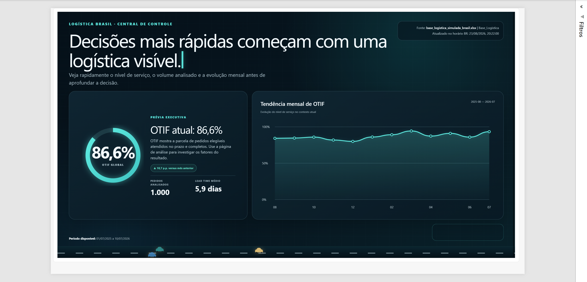
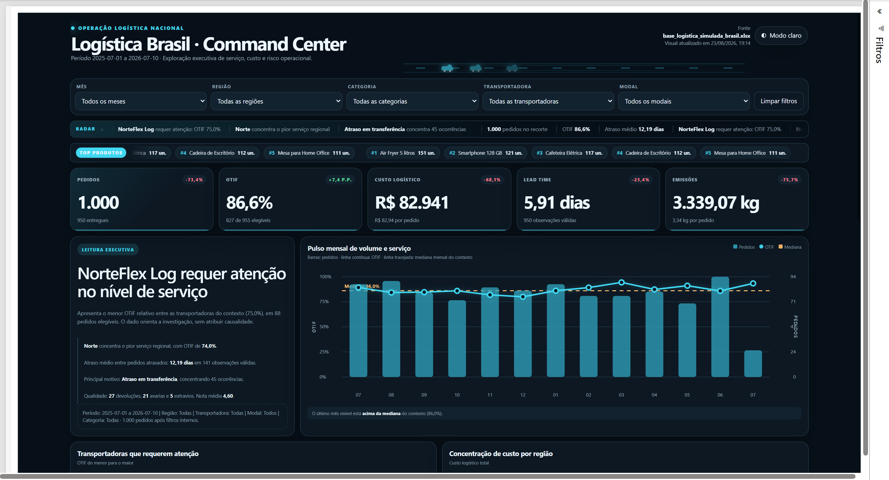
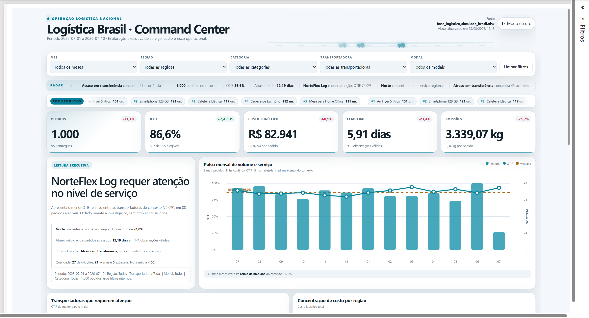

Painel executivo de nível de serviço (OTIF), custo logístico e risco operacional para 1.000 pedidos simulados — da planilha de origem a um banco PostgreSQL modelado em estrela, consumido pelo Power BI.
O Logística1 acompanha a operação de ponta a ponta de uma transportadora fictícia: quanto do que foi prometido chegou no prazo e completo (OTIF), quanto isso custa por pedido e por região, e onde está o maior risco — transportadora, modal, região ou motivo de atraso. A página de capa dá a leitura executiva em 10 segundos; a página de análise abre filtros por mês, região, categoria, transportadora e modal, com leitura executiva dinâmica que aponta automaticamente o ponto de atenção do recorte selecionado.
A base original veio de uma planilha simulada. Para este projeto, o pipeline de dados foi migrado para um banco PostgreSQL modelado em esquema estrela (1 fato + 8 dimensões) — a mesma estrutura do modelo semântico do Power BI — com o ETL de padronização (tipos, nomes, flags de qualidade) reescrito em Python/pandas e o Power BI consultando o Postgres diretamente via conector nativo, no lugar da planilha.
Clique em uma imagem para ampliar.


